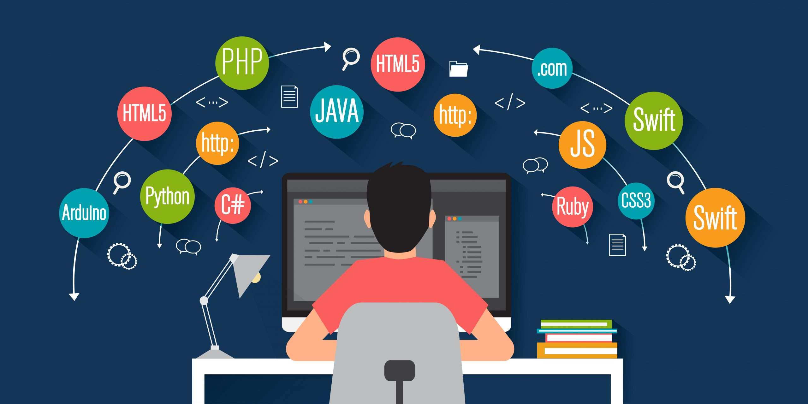

Te explicamos qué es la programación en general y en informática. Además, historia de la programación, sus elementos y lenguajes.
¿Qué es la programación?
La programación es el acto de programar, es decir, organizar una secuencia de pasos ordenados a seguir para hacer cierta cosa. Este término puede utilizarse en muchos contextos, es común hablar de programación a la hora de organizar una salida, las vacaciones o de la lista de programas con sus días y horarios de emisión de los canales de televisión o la lista de películas de un cine.
Además, en el campo de la informática, la programación es la pieza clave en la relación entre los ordenadores y los usuarios.
Programación en informática
En el ámbito de la informática, la programación refiere a la acción de crear programas o aplicaciones a través del desarrollo de un código fuente, que se basa en el conjunto de instrucciones que sigue el ordenador para ejecutar un programa.
La programación es lo que permite que un ordenador funcione y realice las tareas que el usuario solicita.
Lenguaje de programación
El lenguaje de programación es un idioma artificial prediseñado formado por signos, palabras y símbolos que permite la comunicación entre el programador y el ordenador.
Las instrucciones que sigue el ordenador para la ejecución de aplicaciones y programas están escritas en lenguaje de programación y luego son traducidas a un lenguaje de máquina que puede ser interpretado y ejecutado por el hardware del equipo (parte física).
El código fuente está formado por líneas de texto que expresan en lenguaje de programación las instrucciones que debe llevar a cabo el ordenador. Este código es creado, diseñado, codificado, mantenido y depurado a través de la programación.
Existen diferentes lenguajes de programación (Java, Pearl, Python) que se valen de diversos programas en los que se vuelcan las instrucciones. Estos lenguajes varían con el tiempo, se expanden y evolucionan.

¿Para qué sirve la programación?
El principal objetivo de la programación es definir instrucciones para que un ordenador pueda ejecutar sistemas, programas y aplicaciones que sean eficaces, accesibles y amigables para el usuario.
Los programas informáticos suelen seguir algoritmos, que son el conjunto de instrucciones organizadas y relacionadas entre sí que permiten trabajar al software de los equipos de computación.
Historia de la programación
Los comienzos del desarrollo de la programación informática coinciden con la aparición de las primeras computadoras en la segunda mitad del siglo XX. La historia de la programación se puede describir a través del desarrollo de los diferentes lenguajes de programación:
Lenguaje máquina. En este primer período se utilizaban lenguajes máquina muy básicos y limitados basados en el sistema binario (uso de los números 0 y 1 en distintas combinaciones) que es el lenguaje que los ordenadores reconocen, por lo que aún hoy todo lenguaje es convertido a este. Fue reemplazado, ya que resultaba una forma de programación tediosa y difícil.
Lenguaje ensamblador. Más tarde comenzaron a surgir lenguajes que hacían uso de códigos de palabras. Se utilizaban palabras simples, mnemotécnicas y abreviaturas que tenían su correlativo y eran traducidas al código máquina. El lenguaje ensamblador fue incorporado porque resultaba más fácil de recordar y realizar por el usuario que el código máquina.
Lenguaje de alto nivel. A finales de la década del 50 surgió el Fortran, un lenguaje de programación desarrollado por IBM que dio inicio a la aparición de lenguajes basados en conjuntos de algoritmos mucho más complejos. Estos lenguajes se adaptaban a distintos ordenadores y eran traducidos por medio de un software al lenguaje de máquina.
Tipos de programación
Programación estructurada. Busca mejorar y reducir el tiempo del proceso al utilizar subrutinas (subalgoritmos dentro del algoritmo principal que resuelve una tarea).
Programación modular. Divide los programas en módulos para trabajar con ellos y resolver los problemas de manera más simple.
Programación orientada a objetos. Utiliza objetos (entes con características, estado y comportamiento) como elementos fundamentales para la búsqueda de soluciones.
Elementos de la programación
Existen ciertos elementos que son clave a la hora de conocer o ejecutar un lenguaje de programación, entre los más representativos están:
PALABRAS RESERVADAS: Palabras que dentro del lenguaje significan la ejecución de una instrucción determinada, por lo que no pueden ser utilizadas con otro fin.
OPERADORES: Símbolos que indican la aplicación de operaciones lógicas o matemáticas.
VARIABLES: Datos que pueden variar durante la ejecución del programa.
CONSTANTES: Datos que no varían durante la ejecución del programa.
IDENTIFICADORES: Nombre que se le da a las diferentes variables para identificarlas.